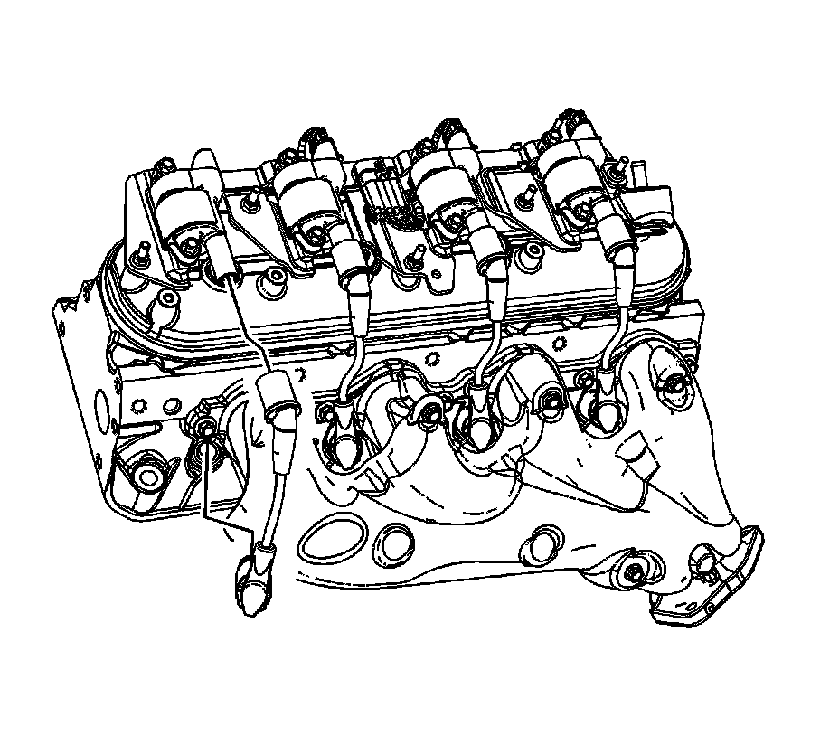

Ignition Cable: Service and Repair
SPARK PLUG WIRE REPLACEMENT
REMOVAL PROCEDURE

1. Remove the spark plug wire from the spark plug.
1. Twist the spark plug wire boot a 1/2 turn.
2. Pull only on the boot in order to remove the wire from the spark plug.
2. Remove the spark plug wire from the ignition coil.
1. Twist the spark plug wire boot a 1/2 turn.
2. Pull only on the boot in order to remove the wire from the ignition coil.
INSTALLATION PROCEDURE
1. Install the spark plug wire to the ignition coil.
2. Install the spark plug wire to the spark plug.
3. Inspect the spark plug wire for proper installation:
1. Push sideways on each boot in order to inspect the seating.
2. Reinstall any loose boot.